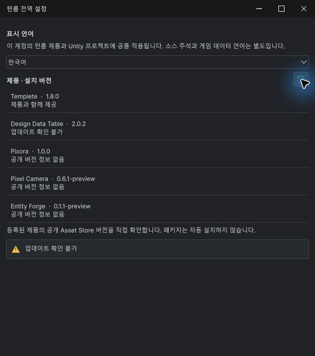

Tracefolio REPORTS & ISSUES
Tracefolio REPORTS & ISSUESDDT 업데이트 확인 불가 · 기존 Asset Store 응답 해석 수정
해결기존 Store 응답 형식을 지원해 실제 Unity에서 공개2.0.1 조회 성공과 설치2.0.2 비교를 확인했습니다.
작업 결과
DDT의 업데이트 확인 불가를 해결했습니다. 실제 네트워크 조회에서 ProductError가 비었고 공개2.0.1을 읽었습니다.
변경 내용
재현 조건
Windows · Unity6000.0.83f1 · DDT2.0.2 · 공개 Asset Store263724
재현 순서
전역 설정에서 업데이트 확인을 실행합니다. 기존 공개 페이지 형식으로 응답하면 버전 조회에 실패했습니다.
기대 동작
공개된 제품 버전을 읽고 설치 버전과 비교합니다.
실제 동작
수정 전: 최신 버전을 특정할 수 없다는 파서 오류. 수정 후: 공개2.0.1, 설치2.0.2, 설치 버전이 더 새로움 표시와 확인 시각 갱신.
원인
기존 파서는 Next.js self.__next_f의 latestVersion만 해석했습니다. 실제 DDT 응답은 ReactDOMrender의 data.ENTITY.Product.currentVersion이 ProductVersion을 참조하는 기존 Unity Store 형식이었습니다.
적용 내용
기존 형식의 해당 Product ID와 published 상태를 확인하고 currentVersion 참조가 가리키는 ProductVersion만 읽습니다. 다른 추천 제품·다른 버전 엔티티의 숫자는 사용하지 않습니다. canonical 제품 식별, 버전 검증과 충돌 거부를 유지하며 페이지 스크립트는 실행하지 않습니다. 새 Store 형식도 계속 지원합니다.


검증
실제 marketplace·assetstore 두 공개 응답에서2.0.1을 읽었습니다. 현재 Unity 모듈b400c09d-4b6c-4242-b322-374e8d5f2f3b의 실제 네트워크 조회에서 오류 없음·public2.0.1·씬/선택/포커스 보존을 확인했습니다.
실제 응답·다른 제품/버전 참조·초안·누락·중복·이스케이프·기존/신규 형식·충돌·로그인/잘못된 호스트·버전 비교19검사 통과. 9개언어 안내·현재57이미지 검사 오류0, 공통45링크 검사 통과.
남은 사항
다른 세 제품은 미출시 초안이므로 공개 버전 정보 없음이 정상입니다. 앞으로 스토어 응답 구조가 바뀌거나 네트워크가 차단되면 확인 불가가 될 수 있습니다. 실패를 성공 상태로 숨기지 않습니다. 모든 언어·DPI 조합을 시각 검증한 것은 아닙니다. 판매용 패키지는 이번 소스 수정 후 재포장하지 않았으므로 최종 제출 전 갱신이 필요합니다.
교훈 검토: 실제 외부 응답·제품 ID·산출물 대조에 관한 기존 규칙으로 충분해 전역 지침 변경 없음. 공개 페이지의 세션성 필드가 있는 전체 HTML은 로컬에만 두고, 버전 엔티티만 남긴 재현 자료를 보존합니다.
작업 시간
- 제안 시간: 5~10분
- 실제로 완료된 시간: 수정·검증 10분 24초, 확인 2026-11-02 15:42:24 KST. 시작2026-11-02 15:32:00 KST. 푸시·공개 배포는 이어서 검증합니다.
- XERJ: 실패 — Status: node not running. 최근 data-directory lock을 보존하고 rg·현재 코드·실제 공개 응답 구조를 직접 대조했습니다.